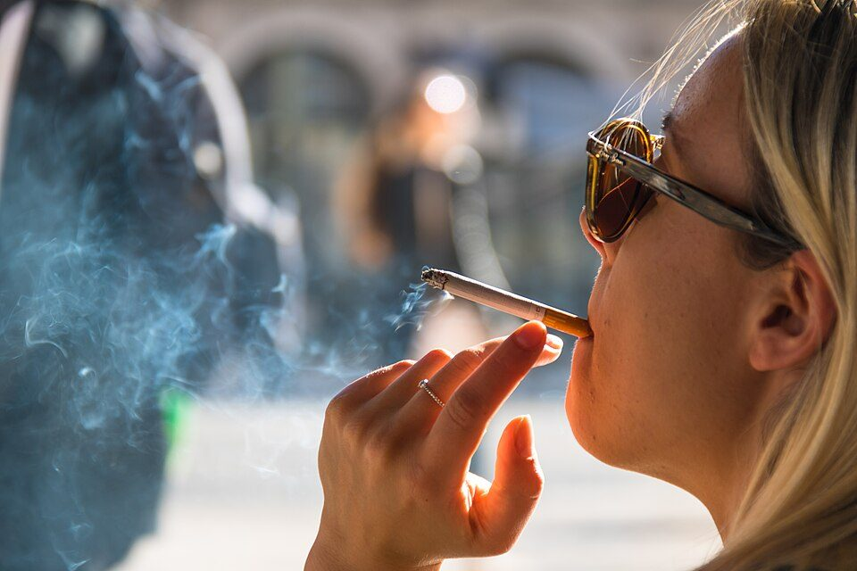

Tabaco


Fumar duplica el riesgo de ictus isquémico y aumenta el de hemorragia subaracnoidea. El humo daña la pared de las arterias, acelera la aterosclerosis, espesa la sangre y sube la tensión. Además, aumenta el riesgo de demencia y de muchas otras enfermedades.
La buena noticia es que dejarlo funciona rápido: el riesgo de ictus empieza a bajar en semanas y, a los 2-5 años, se acerca al de quien nunca ha fumado. Nunca es tarde: dejarlo después de un ictus reduce el riesgo de un segundo.
- Los cigarrillos electrónicos y el tabaco calentado no son inocuos: contienen nicotina, que es adictiva y vasoconstrictora, y otras sustancias cuyos efectos a largo plazo no se conocen.
- El tabaquismo pasivo también aumenta el riesgo de ictus.
- Para dejarlo, el apoyo del médico o la enfermera de atención primaria y los tratamientos (parches o chicles de nicotina, citisina, vareniclina) multiplican las posibilidades de éxito.
Alcohol
No existe un nivel de consumo de alcohol que sea bueno para el cerebro. Los estudios más recientes, que corrigen errores de los antiguos, muestran que el riesgo aumenta con cualquier cantidad, y la idea de que una copa de vino al día protege no se sostiene.
El consumo excesivo:
- Aumenta el riesgo de hemorragia cerebral, sube la tensión y provoca fibrilación auricular.
- Reduce el volumen cerebral: incluso el consumo moderado se asocia con atrofia.
- Daña el cerebelo y produce ataxia (marcha inestable).
- Causa neuropatía y la encefalopatía de Wernicke, por falta de vitamina B1 (tiamina), que si no se trata deja un grave trastorno de memoria (síndrome de Korsakoff).
- Provoca crisis epilépticas, sobre todo al dejar de beber de golpe.
- Es una causa de demencia por sí mismo y aumenta el riesgo de traumatismos craneales.
- Durante el embarazo, causa el trastorno del espectro alcohólico fetal, la principal causa evitable de discapacidad intelectual. En el embarazo, cero alcohol.
Si se bebe, cuanto menos, mejor. La comisión Lancet señala como claramente perjudicial superar las 21 unidades a la semana (una unidad es una caña o media copa de vino).
Drogas
| Sustancia | Efectos en el cerebro |
|---|---|
| Cannabis | En adolescentes, peor memoria y atención; más riesgo de psicosis, sobre todo con cannabis potente y consumo diario |
| Cocaína | Ictus isquémicos y hemorragias, incluso en jóvenes; vasoespasmo; crisis epilépticas |
| Anfetaminas y éxtasis | Hemorragias, hipertermia, daño de las neuronas de serotonina |
| Opioides | Sobredosis con parada respiratoria y daño cerebral por falta de oxígeno |
| Óxido nitroso («gas de la risa») | Lesión de la médula y los nervios por déficit de vitamina B12; cada vez más casos en jóvenes |
| Inhalantes (disolventes) | Daño de la sustancia blanca, ataxia, demencia |
El cerebro sigue desarrollándose hasta los 25 años, y el de los adolescentes es especialmente vulnerable a las drogas y al alcohol. Ver desarrollo del cerebro.
Pedir ayuda
Las adicciones son enfermedades del cerebro, no una falta de voluntad, y tienen tratamiento. En España, los centros de atención a las adicciones de cada comunidad son gratuitos y confidenciales. El médico de familia puede orientar.
Fuentes
- O'Donnell MJ, et al. Global and regional effects of potentially modifiable risk factors associated with acute stroke (INTERSTROKE). Lancet. 2016;388:761-75.
- GBD 2016 Alcohol Collaborators. Alcohol use and burden for 195 countries and territories. Lancet. 2018;392:1015-35.
- Daviet R, et al. Associations between alcohol consumption and gray and white matter volumes in the UK Biobank. Nat Commun. 2022;13:1175.
- Ministerio de Sanidad. Límites de consumo de bajo riesgo de alcohol. 2020.